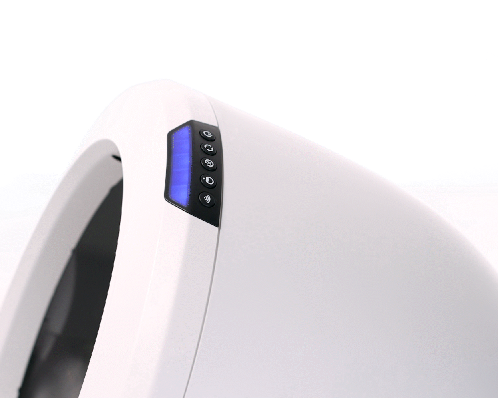
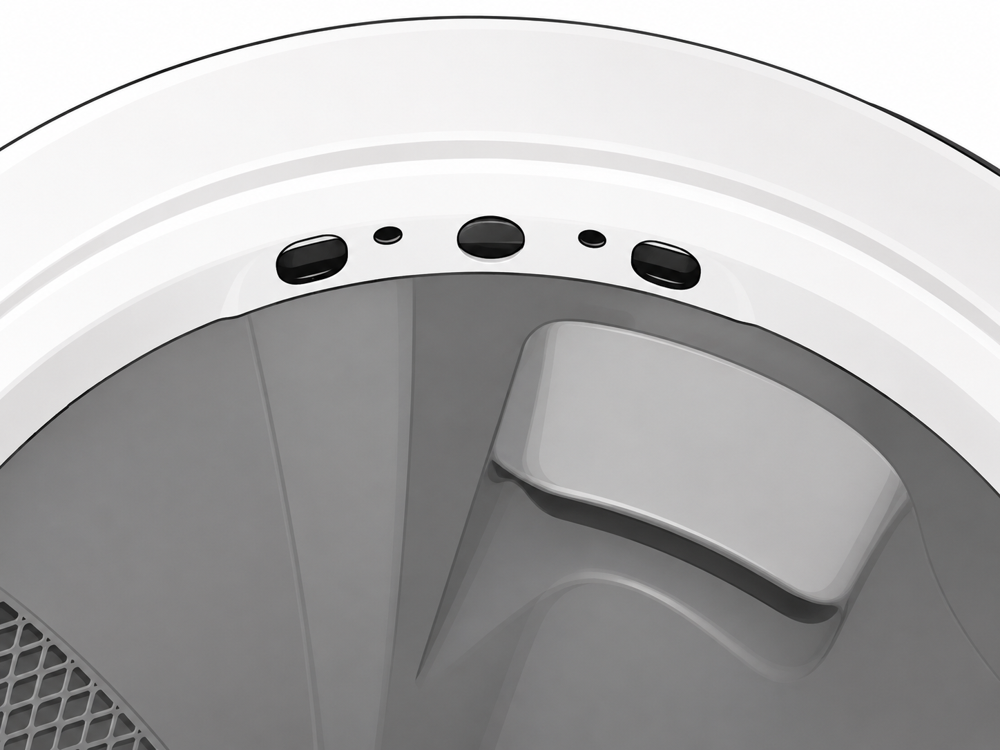
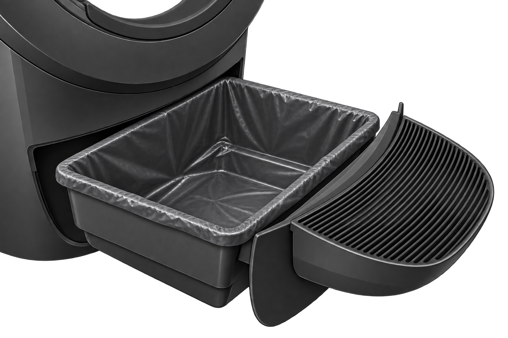
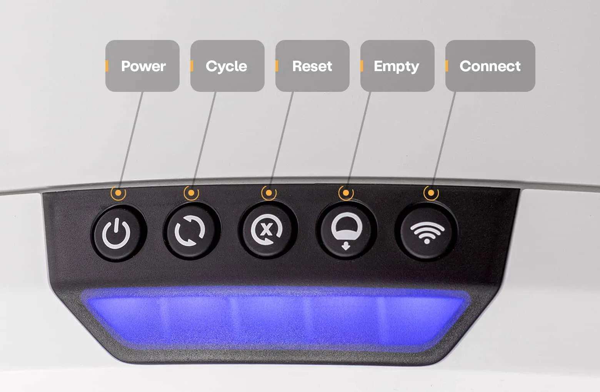

Flashing Blue
If your unit’s light bar is flashing blue, this indicates that the waste drawer is full.
Empty the waste drawer, press the Reset button, then press the Cycle button.
However, if the light pattern is still persisting, we can proceed with recalibrating the waste drawer sensor and cleaning the curtain sensors.

Step 1: Wipe the curtain sensors
Drag the microfiber cloth over each of the three highlighted curtain sensors to remove dirt and debris.

Clean the Waste Drawer
Remove the waste drawer liner, then wipe the drawer clean to remove any remaining dirt and debris.
Start by selecting the hand tool and removing the waste drawer liner.

Turn Off Litter-Robot 4
Next, press the Power button to turn Litter-Robot 4 off.
Do not unplug the unit.